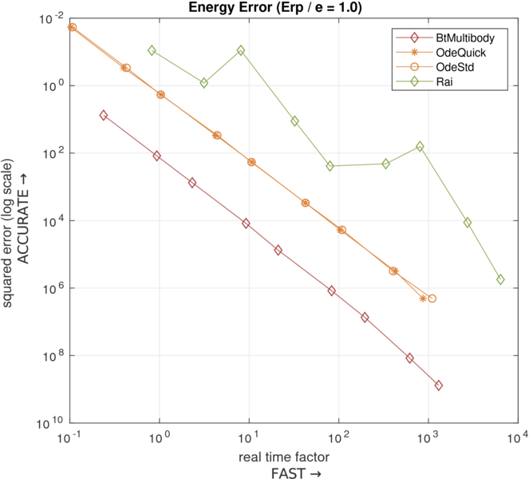

Bouncing test

Test scenario
Tested solver list
- Rai
- Bisection solver (Rai solver)
- Bullet[1]
- Sequence impulse
- NNCG
- MLCP Dantzig
- MLCP PGS
- MLCP Lemke[2]
- ODE
MuJoCo[3]
- Dart
Commentary
-
[1] Bullet has problem in simulation of elastic/inelastic collision when the time-step is small which is seemed to be a software bug as the following video(left).
-
[2] Bullet MLCP Lemke solver has huge error due to the late rebound (right).
-
[3] MuJoCo cannot simulate elastic collision. Furthermore, it is not possible to set specific restitutional coefficient in MuJoCo. The only way to make bouncy contact is adjusting solref parameter (damping parameter), however there is no one-to-one correspondence between solref and restitutional coefficient.
Results
The following figure is accuracy-speed plot of elastic collision case. The energy of the system preserves in Rai and ODE.
Rai shows the best result among the simulators.
